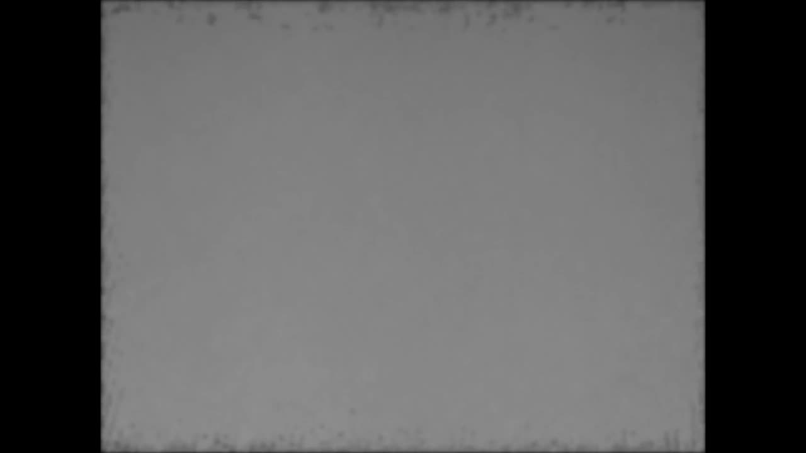
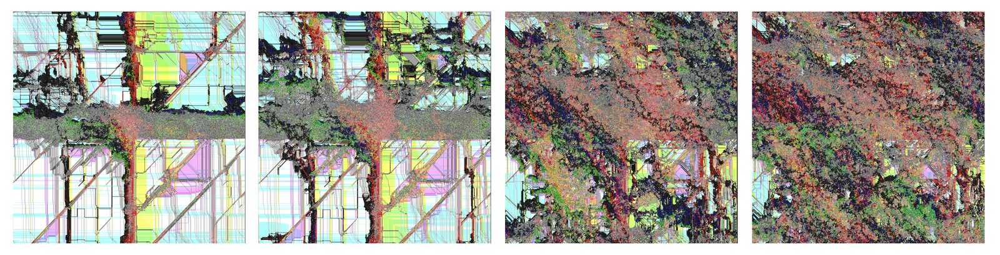
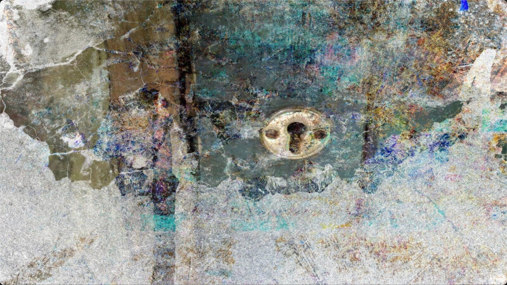
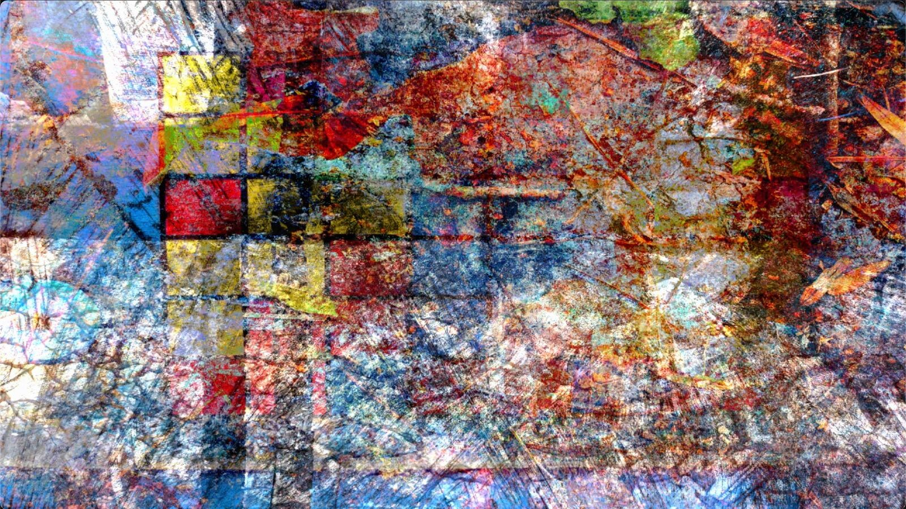
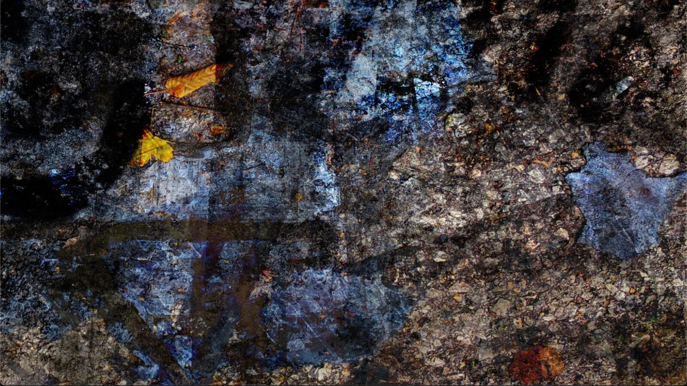
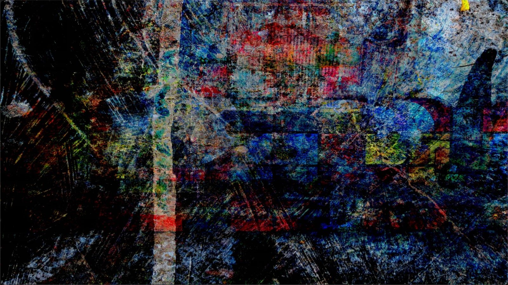

Networked performance by 3BP
PROJECT DESCRIPTION
3BP is a new international trio of improvisors formed in the autumn of 2020 on the occasion of an online live performance at Queen’s University’s Sonic Arts Research Centre, Belfast, subsequently performing at Northern Ireland Science Festival and New York City Electroacoustic Improvisation Summit. The trio connects artist-researchers in Belfast, Northern Ireland, Newcastle, United Kingdom, and Berlin, Germany, through an online performance ecology comprising previously developed NIMEs [1][2] in combination with newly created systems. Despite several earlier collaborations between the individual members [3][4][5][6], the trio is network-native in that it was created, and has so far only existed, online. In this virtual domain, the musicians apply their shared fascination with feedback networks [7], distributed systems and resistance in materials and instruments [8][9] to the uncertainties of online information transfer such as latency, network fluctuations, compression and audio packet loss. While exploring these properties as creative opportunities, 3BP additionally engages with the emergent multiplicity of spaces and perspectives as fundamental to online musicking. The stretching of the performance space - its physical segmentation across continents and its virtual distribution to multiple servers - challenges the notion of the music happening at a single true location or moment in time.
Accordingly, the trio, rather than attempting to recreate the physical intimacy of the traditional pre-COVID19 concert situation, draws upon Karen Barad’s theory of intra-action [10] to investigate how performance and the materiality of the network mutually engender each other. Here, the improvised nature of the trio’s practice creates a framework for responding to the complexity of the situation, favouring situated actions over predefined plans [11] and where, to echo NIME2021’s overall theme, play and learning are intra-actively shaped together.
Having already developed strategies for exploring resonant frequencies of online performance by routing audio signals between instruments across the network, in this concert, 3BP explores the idea of distributed audio feedback through a further development of signal routings between the three locations. In line with our previous concerts, we perform alongside an accompanying video work. This assembles algorithmically edited collage, personal archival and documentary footage, and live visualizations in a form inspired by the ‘essay film’ [12], a cinematic format which is appropriate for experimentation and presenting the coexistence of multiple impressions of a topic and whose philosophy is consistent with our approach to improvisation and communication in distributed media.
PROGRAM NOTES
3BP is a new international trio of improvisors. Born of and in the pandemic and thus native to online exchange of real-time audio, the trio explores network instabilities, data loss, compression artefacts and latency as affordances for a creative approach to negotiating the physical and virtual materialities and spaces of online improvisation. The performance features instruments and interfaces already presented at NIME along with new inventions, chained together in complex signal and feedback loops across the network. A new video work in the style of a cinematic ‘essay film’ accompanies the performance, combining algorithmically edited collage, personal archival and documentary footage, and live visualizations. The concert is a document of the evolution and adaption of both instruments and performers as they become entangled in distributed and temporally asynchronous ecologies across continents.
Performers:
John Bowers: Self-built instruments, modular synthesizers, feedback, signal processing and zither.
Adam Pultz Melbye: FAAB (Feedback-Actuated Augmented Bass).
Paul Stapleton: VOLA (Volatile Assemblage).
MEDIA

▶Extract from 3BP’s debut performance


The emergence of a visualization of a performance with pixel values set by 2d Turing Machines (one each for red, green, blue, black, and white) programmed by extracted auditory features


Algorithmically generated collage 1


Algorithmically generated collage 2


Algorithmically generated collage 3


Algorithmically generated collage 4
Citations
Stapleton, P. (2019). Uncertain Rhythms. In Proceedings of the International Conference on New Interfaces for Musical Expression
↩Úlfarsson, H., & Melbye, A. P. (2020). Sculpting the behaviour of the Feedback-Actuated Augmented Bass: Design strategies for subtle manipulations of string feedback using simple adaptive algorithms. Proceedings of the International Conference on New Interfaces for Musical Expression, Birmingham City University
↩Bowers, John and Stapleton, Paul. [Under review]. Tragic Experiments Numbers 1 to N: Ecologies, Technologies and Improvisational Forms of Life in the Plague Years.
↩Bowers, John and Stapleton, Paul (2020). http://www.paulstapleton.net/portfolio/with-john-bowers
↩Stapleton, P., & Melbye, A. P. (2017). SAP. https://soundofsap.bandcamp.com/album/sap
↩Rose, S., Melbye, A. P., & Stapleton, P. (2019). Ens Ekt: Rite. https://ensekt.bandcamp.com/releases
↩Bowers, John and Haas, Annika. (2014). Hybrid Resonant Assemblages: Rethinking Instruments, Touch and Performance in New Interfaces for Musical Expression. Proceedings of the International Conference on New Interfaces for Musical Expression, Goldsmiths, University of London, pp. 7–12.
↩Melbye, A. P. (2021). Resistance, Mastery, Agency: Improvising with the feedback-actuated augmented bass. Organised Sound, 26.1.
↩Stapleton, P. (2008). Dialogic Instruments: Virtuosity (Re)Located in Improvised Performance. Leonardo, 15(11).
↩- ↩Barad, K. M. (2007). Meeting the universe halfway : quantum physics and the entanglement of matter and meaning. Duke University Press.
- ↩Suchman, L. (2006). Human-machine reconfigurations: Plans and situated actions, 2nd edition. Human-Machine Reconfigurations: Plans and Situated Actions, 2nd Edition (2nd ed., Vol. 7, pp. 1–314). Cambridge University Press. https://doi.org/10.1017/CBO9780511808418
Corrigan, T. (2011). The Essay Film: From Montaigne, After Marker. Oxford
↩